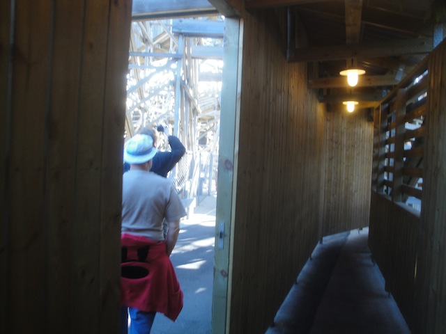
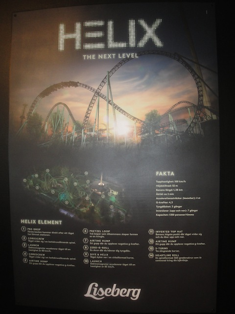
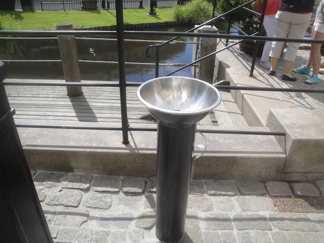

All right. Onto the next day of the trip. Today, we're at one of the most anticipated parks of the trip, Liseberg.
Not only did this day contain some of the best coasters on the trip, but it was really close, so today was a very easy and relaxing day, much like Tivoli Gardens.
Notice anything special about this building in Gothenberg? =)

All right. Before our ERT begins, we have some excitement to go through first. =)
Yep, we were first taken to the little house in the middle of Balder for some early morning fun. =)
In the midsts of hunting for an Ass Job, I figured that it'd be good to learn physical labor.
Incrediblecoasters has left our mark on Balder. =)
Damn right I do.
This is where we deal with those who don't like Balder.
Enough chatting. Now it's time to ride Balder!! =)
The line for Balder contains a bunch of photos of coasters not nearly as good.
Yeah. That's the kind of line I like to see for ERT. =)
And yeah. Like all the reviews claim, Balder is incredible and one of the best wooden coasters in the world. Now I'm in the minority as I'm one of the few who prefers El Toro over Balder, but both are incredible rides and you'll see both on my Top 10 Wooden Coasters List.
Yeah. You can see the airtime in this photo. Just look at the hair.
Quick random note about POVs at Liseberg. Liseberg is not a POV friendly park if you're just visiting on your own, however, they allowed cameras for ERT, and I must admit. Thank you for allowing an oppertunity!! I love it in Europe where even at the non-POV friendly parks, you can at least obtain permission where doing so in American parks is damn near impossible. So thank you Liseberg for this special privelage. =)
We need more Intamin Pre-Fabs in the world.

And now, we move onto Morning ERT on Helix. =)
Helix, hands down, gets the award for most confusing line. Seriously, this thing never ends.
Sadly, Helix broke down thanks to new ride problems. But we got Night ERT to make up for the morning breakdown. Thank you Liseberg. You guys are awesome. =)
Come on Patrick. Run up the down escelator.
Well, we're up here, so we might as well check out their drop tower, Atmosfear (Ha-ha. Very Punny).
For you nerds out there.
Atmosfear may not be the best drop tower out there, but come on. You know it's a damn fun ride.
Luckily, Helix was fixed quickly, and we were able to get on it very quickly thanks to a special one time fast pass (Again, thank you Liseberg).
And yeah, Helix is a damn good ride (I talk a lot more about Helix down below).
All right. Now that the park's open, let's get all the other credits out of the way.
Sadly, Rabalder is NOT the Balder of kiddy coasters.
All right. It's time for lunch (already) and Liseberg put out quite a good spread for us.
And yes, the dessert was extremely good too. Thank you again Liseberg.
Get the emberassing stuff out of the way first, then you can just focus on the good stuff.
Much to the joking of the operator, we made it over the lifthill and around the course. Not a good kiddy coaster.
All right. Let's move onto the park's custom Schwarzkoph, Lisebergbanan.
See that car? It holds 24 people, and there are 5 of those trains running on the train. Dear other parks, if Liseberg can run 5 trains, you can run at the bare minimum, 2.
And yeah. Lisebergbanan is a fantastic coaster. Not surprising at all to hear that this was Schwarzoph's favorite creation.
It really says something about your park when a kickass custom Schwarzkoph is only your 4th best ride.
You would never guess that this is in the middle of Gothenberg.

Another random fact that I just want to praise Liseberg for. They have water fountains all over the park. THANK YOU!!! THANK YOU SO MUCH!!! In Northern Europe, where water fountains are so damn hard to find, I love how avaliable they are at Lisberg. =)
Now Liseberg has a custom haunted walk through, one of the few haunted walk throughs that's actually open all year round.
Now, we have a special version for us later tonight, but some of the Haunt Fans in our group wanted to check it out in it's normal form.
Just one last credit for us to get, and this one isn't a credit whoring coaster.
At most parks, an Intamin Rocket coaster would be the star attraction. Here, it's only the 3rd best ride.
Kanonen is an intersting coaster. It's puny, but also kind of slow.
But don't worry. There's definetly some whip around these turns.
All right. Let's check out their Fantasyland Disney-Knock Off Dark Ride.
Come on Captain Hook. Walk the plank!! It's fun!!
The log flume was really good. Built into the hillside and it's double drop ending, it's easily one of the better log flumes.
I love the Screamin Swings here, that swing right over the edge of the hill. Always makes for a fun ride.
We simply had to take a spin on the big ferris wheel for some great ariel shots of Liseberg.
And of course, it also lots of great views of Gothenberg as well.
"Please do not punch of kick the walls. Thank you."
And yeah. The Liseberg views up here are phenomenal.
Aww. Kanonen is so cute when its being dwarfed by Helix.
All right. We had to stop and take a quick ride on Lisebergbanan for some good lateral fun.
I'm not sure who it was who had never ridden a Waltzer (aside from myself), but we got a really good ride on this one.
"God Dammit!! All this free food and my lack of running has really put it's toll on me."
We went back to the Balder House for some more treats and perks, cause yeah. It's awesome!!
Balder and Booze. These are a few of my favorite things.
"Just whipping it out and marking my territory."
Speaking of my marked territory... =)
Holy Crap!! Look at all the boats they launched on their rapids ride. I guess their P2 is gonna have a lot of watching to do. Oh wait, they don't have a P2 at Liseberg. Why? Because they TRUST people at Liseberg to not be stupid f*cking idiots!!
Neil (who HATES Haunts) is not looking foreword to our special version of the Haunt (Robb was a scare actor).
"Come on Neil!! You know you like the Haunt!!!"
And yeah. Now Night ERT has begun on Balder, Helix, and Kanonen. Everyone was either at Balder or Helix, and I kind of felt bad for Kanonen since nobody was riding it. So I gave it a courtesy ride out of I feel obligated to ride anything we have ERT on at least once. Plus, I needed to get my Kanonen POV as well. =)
And yeah. Now we have Night ERT on Helix to make up for the morning, or as I like to call it, Variety: the ride.
Yeah. I think Helix deserves an award for having the most variety on any coaster in the world. It has EVERYTHING. Drop out of the station, launch, airtime, hangtime, laterals, positive Gs, out of control feelings, enough inversions to where I stopped counting, and on top of all that, it's a LONG ride. I seriously think Helix is up there as one of the longest coasters (time wise, not counting lifthills, brake runs, or boring bits) in the world.
I know some people put Helix in their Top 10 Lists and while I wouldn't go quite that far, it really is a GREAT ride. Mack really needs to start promoting their launched coasters more cause I've ridden all three, and they're all FANTASTIC (this one easily being the best).
I remember hearing the park representitives talk about how Helix wasn't meant to be the most intense coaster out there, but the best coaster they could possibly design, to maximize fun and not be too intense so people could ride it over and over and over again, and honestly, that's EXACTLY how I thought of the ride. So Liseberg really hit it out of the ballpark with Helix. I can't think of a coaster that achieved it's main goal more flawlessly.
So yeah. I just got to say good job on Helix. You get two big thumbs up from us.
It really is the type that you can just sit on for hours and enjoy.
Oh, and I forgot to mention it's catchy as f*ck theme music. Seriously, this just behind Euro Mir for best theme music ever. =)
It's really hard to move from one ride to another when you have so many great coasters open for ERT, and while I didn't want to leave Helix, I wanted to get more rides on Balder even more.
Do not underestimate this ride. All the claims are true and this is one of the best coasters in the world and THE best coaster in Europe.
And yeah, there's no better way to end a night than with countless rides on Balder. Thank you Liseberg for all that you did for us and I can not tell you enough just how much I liked your park. I hope to get back to your park as soon as possible.